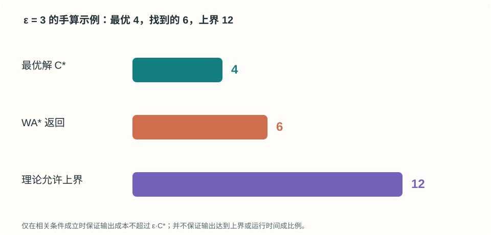
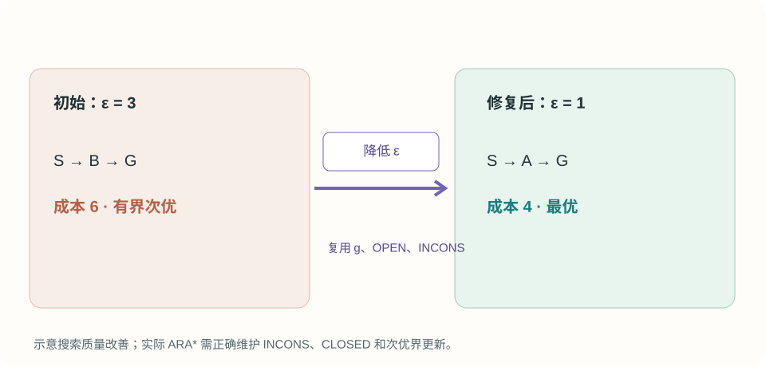

A* 变体：把速度、质量与复用分开讨论
ε 次优界到底保证什么？ARA* 为什么需要 INCONS？双向搜索何时才能停机？分层抽象又牺牲了什么？
最优性与计算预算为什么会冲突
在静态地图上，如果允许更多搜索，通常可以坚持精确的最短代价；但移动机器人需要很快给出一条可行路线，且障碍一变化，旧计划可能失效。为了让搜索在不同场景下取得平衡，研究人员发展了加权、双向、任意时刻与分层等 A* 变体。
它们分别修改的是排序权重、搜索方向、重复利用的搜索状态或状态空间表示。不能把这些变化简单归纳为“更高级的 A*”，因为正确性前提和可保证的性质不同。
SEARCH VARIANTS · 08
Weighted A*：放大启发式意味着什么
标准 A* 按 g+h 排序。加权 A*（WA*）将估计剩余成本乘以 ε≥1：
ε 越大，队列通常越偏好对目标看起来更近的状态，更容易较早找到可行解，但通常不再保证最优。若满足非负边权、可纳 h、合适的最优路径存在与终止/重开等搜索假设，标准的 WA* 可得到成本不超过 ε 倍最优成本的次优界。这里 ε 是理论上界参数，不能把它理解成实际成本一定等于 εC*，也不能把 ε=3 当成“速度提升三倍”。
SEARCH VARIANTS · 08

要证明界，直观地看某个最优路径前沿节点 n，若 h 可纳，则 fε(n)=g(n)+εh(n)≤εC*（满足当前最好 g 与最优前缀的关系）。当目标最终按最小可用 fε 弹出，g(goal) 不会超过该界。实现若错误丢弃改善路径、允许负边或使用高估的 h，就不能套用这段推理。
交互：把 ε 从 1 调到 3
使用四节点图 S→A→G (2+2=4) 与 S→B→G (1+5=6)。下界取 h(A)=2、h(B)=0、h(S)=1、h(G)=0，都是非负、可纳且与本示例边权一致的估计。ε=1 时，A 的优先级为 4，先于已经由 B 发现的目标候选 6；ε=3 时，A 的优先级变成 8，目标 6 先被弹出。
ε=1：路径 S→A→G，总代价 4（最优）。
这是固定的教学图；操作时重新执行一个真正的优先队列演算，不是实时机器人实验。
如果忽略前提，随意给 h 乘权可能提前返回不可接受的路线。这一技巧不应该用来绕过安全约束；碰撞、动力学或最大允许风险仍需要作为独立的硬性约束。
ARA*：在一次搜索基础上逐次改进
Anytime Repairing A*（Likhachev、Gordon、Thrun，2003）是一种 anytime 算法：先以较高的 ε 迅速产生一条有界次优解，在计算预算允许时逐步降低 ε。它的关键不是重复从零执行 WA*，而是复用 g 值及 OPEN、CLOSED、INCONS 等集合，修复此前未完成的搜索。
SEARCH VARIANTS · 08

对同一静态问题，ARA* 所维护的当前解成本不会因为发现更好候选而变差；将 ε 减到 1 并正确收敛时才恢复最优性。真实实现还要处理下界计算、闭集修复以及跨轮迭代的优先级更新。此处代码示范 WA*，并不是完整 ARA* 实现。
双向 A*：碰头并不等于最优
从起点向前与从目标按反向边向后进行搜索，直观上有机会缩小扩展区域。但对于有向图，反向搜索必须沿原图边的反向遍历并保留对应代价；若使用两个不同的启发式，还需要使前后搜索的代价变换与停止判定协调。
错误做法是：两侧第一次发现共同节点后立刻拼接两段路径。这通常只能得到一条候选路线。正确实现应维护当前最佳拼接成本 μ，并等待由两个搜索前沿提供的有效下界足以证明没有更便宜的完整路线。不同的双向 A* 方案停止条件并不完全相同，不能直接照搬无启发式双向 BFS 的终止策略。
双向搜索同样有可能得不偿失，例如反向邻接查询昂贵、目标不是单一确定点，或前后估计信息严重不对称的情形。
分层 A*：先做抽象，再细化路径
如果地图包含上百万栅格，可以先将房间、走廊或区域边界抽象成宏观节点，在粗图上选通道，再在具体栅格上连接局部路线。其节省来自减少查询时考虑的细节，不是 A* 的排序公式发生变化。
但抽象图中“两个门看起来连通”不代表底层存在相同代价的路径。过度简化的门/区连接、错误的预处理成本以及被遗漏的拓扑变化都可能导致次优或不完整结果。只有当抽象代价与局部优化的性质得到证明，才可声明全局最优。
混用风险：WA* 的 ε 次优界、ARA* 的 anytime 修复、双向搜索的上下界停机、分层搜索的抽象误差，是四套不同的条件。单纯组合这些名称不会自动继承各自的保证。
在最小图上验证 Weighted A*
代码运行环境 Python 3.10+、无第三方库。它展示 WA* 的有界次优排序，在 g 改善时允许重复入队（通过跳过过期项）。断言覆盖 ε=1 的最优路径、ε=3 的成本 6 和该例中的次优界。这个小程序没有实现双向 A*、ARA* 或 HAA*。
from heapq import heappush, heappop
from math import inf
def weighted_astar(graph, start, goal, h, epsilon=1.0):
"""非负边权、有限图，h 是真实目标代价的可纳下界。"""
if epsilon < 1:
raise ValueError("epsilon must be >= 1")
best, parent = {start: 0.0}, {start: None}
queue = [(epsilon * h[start], 0.0, start)]
while queue:
score, g, u = heappop(queue)
if g != best.get(u, inf):
continue
if u == goal:
path = []
while u is not None:
path.append(u)
u = parent[u]
return g, path[::-1]
for v, cost in graph.get(u, []):
if cost < 0:
raise ValueError("negative edges unsupported")
next_g = g + cost
if next_g < best.get(v, inf):
best[v] = next_g
parent[v] = u
heappush(queue, (next_g + epsilon*h[v], next_g, v))
return inf, None
graph = {
"S": [("A", 2), ("B", 1)],
"A": [("G", 2)],
"B": [("G", 5)],
"G": [],
}
h = {"S": 1, "A": 2, "B": 0, "G": 0}
optimal = weighted_astar(graph, "S", "G", h, 1)
quick = weighted_astar(graph, "S", "G", h, 3)
assert optimal == (4.0, ["S", "A", "G"])
assert quick == (6.0, ["S", "B", "G"])
assert quick[0] <= 3 * optimal[0] # 示例满足对应上界
assert weighted_astar(graph, "G", "S", h) == (inf, None)
print("epsilon=1:", optimal, "epsilon=3:", quick)更深入的实验应对多个地图、ε 值和启发式类型记录：解成本 / 已知最优成本、首次可行解时间、逐轮修复时间、内存峰值与扩展数。不应引用一张示意图来声称“平均加速多少”。
如何选择以及哪些保证不能随意说
| 目标 | 优先考虑 | 需要额外核实 |
|---|---|---|
| 静态问题，最优性严格 | 一致启发 A* | 图建模、启发式和终止条件 |
| 有限预算，允许控制成本劣化 | WA* | ε 界对应的全部假设 |
| 计算时间未知，希望持续改善 | ARA* | OPEN/INCONS 修复是否正确 |
| 固定目标和易于反向查询 | 合适的双向搜索 | 双向终止下界与有向边 |
| 长距离多次查询 | 分层与预处理 | 抽象误差、更新成本与完整性 |
无论采用哪种路线，约束正确性排在速度优化之前：先保证生成的状态转移合法，再讨论估价函数能否缩小搜索空间。